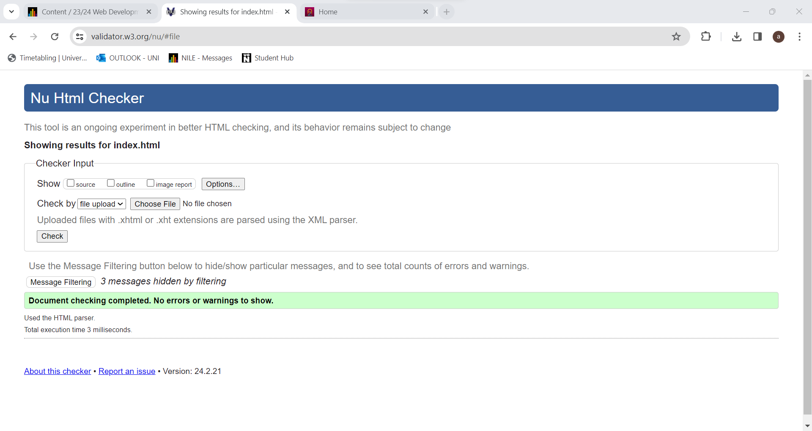
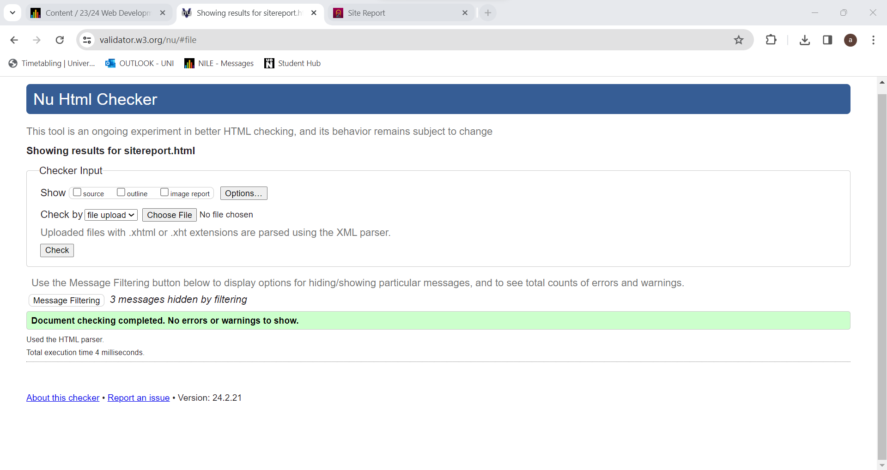

SITE REPORT
Using HTML and CSS to build my first website was an exciting way to get started in the web development world. Equipped with an inquisitive mind and unwavering dedication, I dove headfirst into markup and styling, eager to create my digital masterpiece. A wave of exhilaration mixed with a small amount of fear at the unfamiliar ground ahead passed through me as I opened my text editor and gazed at the blank canvas of my code.
I started by thoroughly building the basic framework of my website using HTML, assembling elements and tags to specify the organization of my material. As I worked to shape the design of my website, every line of code felt like a jigsaw piece that fit perfectly into its position. I like shaping raw code into a coherent structure that would act as the framework for my work, from headers to paragraphs, graphics to links.
Making the switch to CSS was enlightening for me since I realized how much cascading style sheets might enhance my design. My website started to take on a life of its own, expressing my artistic vision and creative intent with every choice I made about color, typeface, and layout. I played around with selectors and attributes, perfecting the look of each piece and enjoying how easy it was to change visual aspects.
I continued despite my uncertainty and aggravation, feeling a sense of pride every time I accomplished a new milestone. As I improved my problem-solving abilities and developed a deeper comprehension of the complexities of web programming, debugging mistakes and fixing discrepancies became a necessary part of the learning process.
At last, I felt a wave of pride as I saw my website preview in the browser for the first time. Words could not express the delight I felt when I saw my work come to life with its well-thought-out design and practical arrangement. In addition to learning useful technical skills, building my first website using HTML and CSS sparked a renewed appreciation for the artistry and creativity that go into web production.
I have also Validated all the pages and fixed all the error and All the pages now are without any errors
 